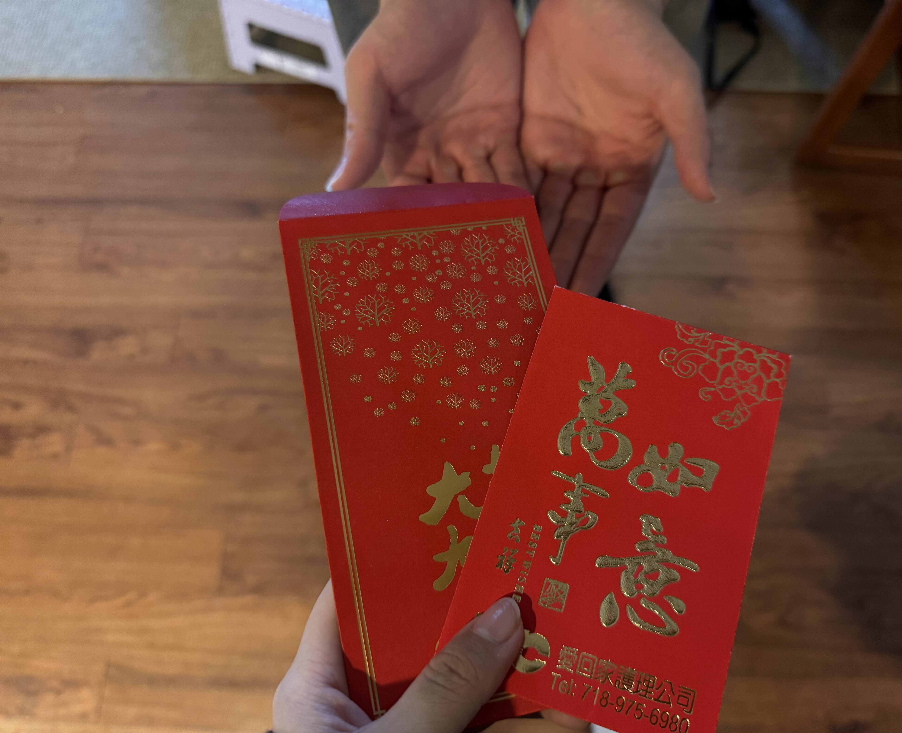
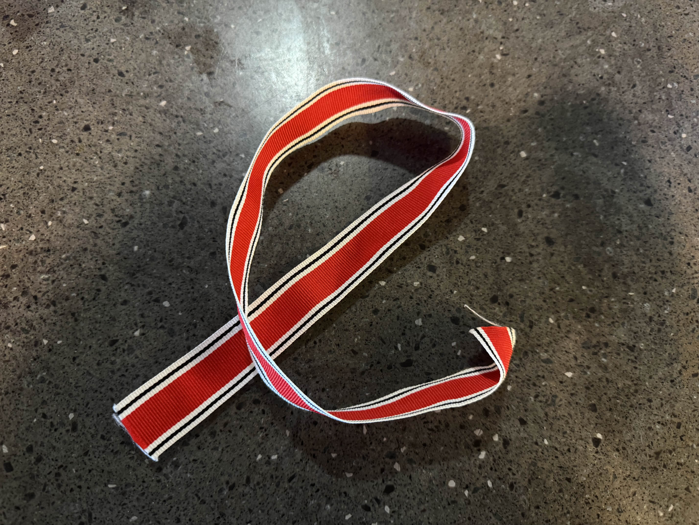
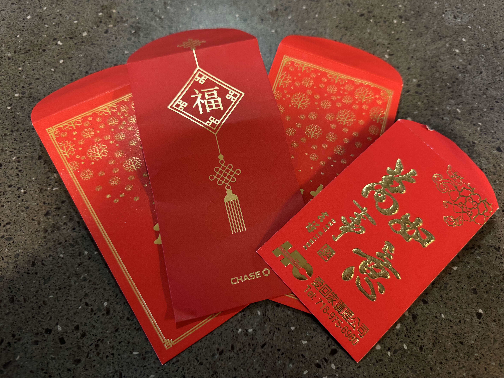
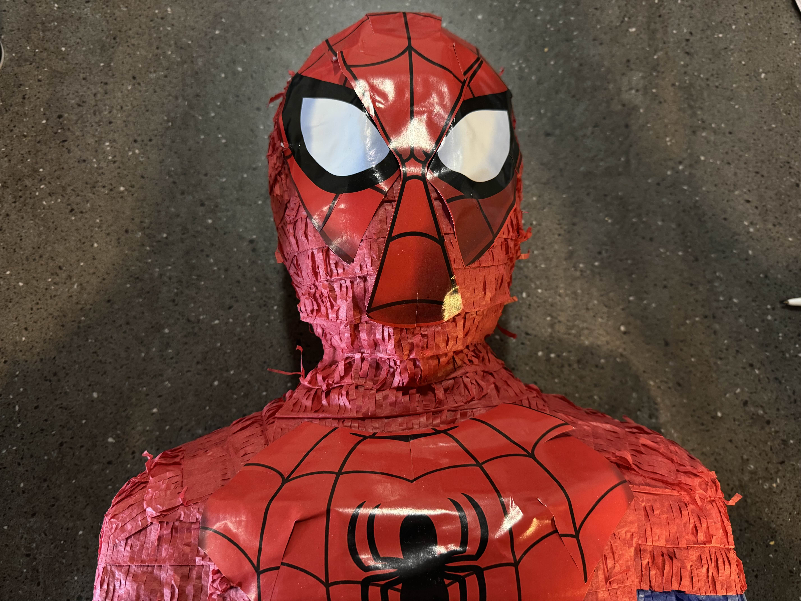
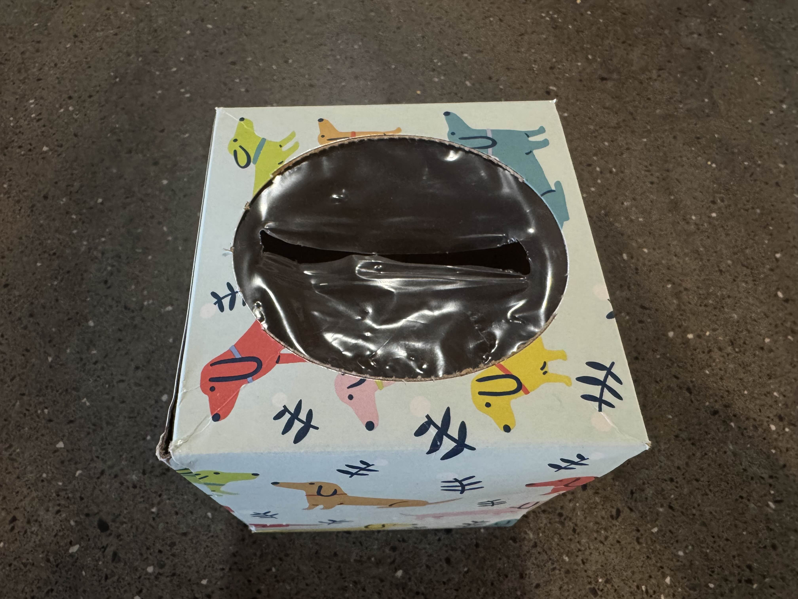
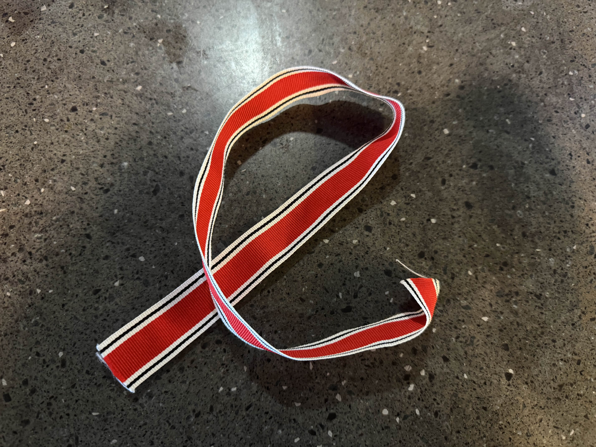
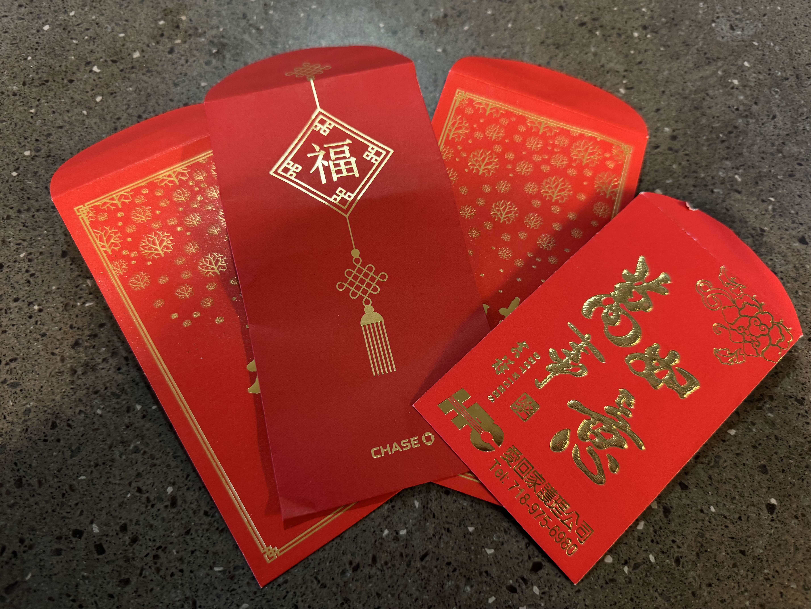
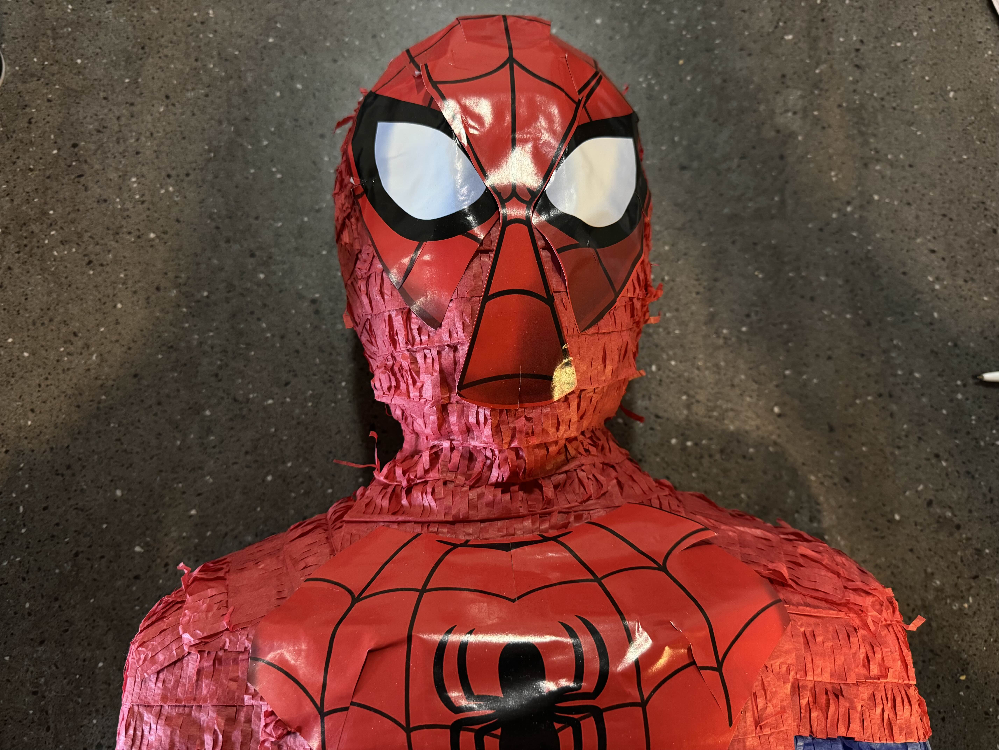
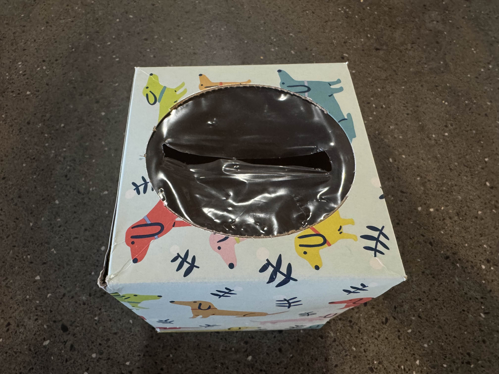

Week 7: Feels Like It's Been Forever
Preface
Some may ask me why and how I’ve reached this far in documenting my trash. At first, it seemed like a simple exercise. But over time, it has evolved into something much deeper. This project has given me a unique window into my habits, revealing how much I tend to accumulate and how often I overlook the true cost of the things I buy. Each week, as I photograph and reflect on the items I discard, I’m confronted with the stories behind them. Why did I acquire this? How did it serve me? And why am I letting it go now? These questions have led me to think more critically about my choices, not just as a consumer but as someone who is part of a larger ecosystem.
By sharing this journey, I hope to do more than just document my trash. I want to spark conversations about sustainability, mindfulness, and the often-overlooked value of the things we discard. It’s easy to think of trash as something that simply disappears once it’s out of sight, but every item has a history and a future. Whether it ends up in a landfill, a recycling center, or a secondhand store, its journey doesn’t end when we let it go. This project has become a way for me to take responsibility for my role in that journey. It’s also a reminder that small, intentional changes can add up over time. By reflecting on what I throw away, I’m learning to make better choices about what I bring into my life in the first place. And by sharing these reflections, I hope to inspire others to do the same.
Overview
Introduction
This week was a mix of random things left from parties, some old items that I have forgotten about, and a few surprises. Compared to last week, which was full of cleaning out old paperwork and books, this week felt more personal. I found myself parting with items tied to memories, like the Spiderman piñata from a birthday party and a deck of cards that has seen countless game nights. At the same time, I disposed of everyday essentials like a worn-out face mask and an empty tissue box.
Items Overview
The items this week fell into three distinct categories:
- All Fun and Games (Party & Games): Deck of Cards, Spiderman Piñata, Pokemon Cards, Red Packets
- The Weather Is Getting Cold, and I’m Getting Sick (Health Related): Face Mask, Tissue Box
- Didn’t Realize I Still Had This? (Forgotten Items): Old Receipts, Empty Makeup, Ribbon
Item of the Week: Red Packets
Red Packets will be the focus of this week! I selected this item as I feel like there is a lot to learn about this item’s history. Along with the timing just seems very fitting considering how important this event is to my family and culture.
Memoir
I received these red packets during this year’s Chinese New Year celebrations from my family members. Each one was filled with money, a tradition meant to bring luck and blessings for the year ahead. But I don’t have that many reasons to keep the packets after taking the money out, so I will be throwing them away. This is a means to declutter, but I am very appreciative of the generosity and hope that the year to come will have a lot of fortune ahead.
Research
Red packets, or “hongbao”, have a rich history in Chinese culture. Traditionally, they were used to ward off evil spirits by placing coins in red envelopes. The reason for them being red is due to the fact that, in China, red is fire and is a symbol of joy, happiness, success, and good fortune. So they are a symbol of good luck and are often given during holidays and special occasions. There are also tips that can be seen on how to give red packets to others. Learn more about red packets.
Gallery
 







Item Data
| Item | Weight | Cost | Acquired | Location | Owned Duration | Mode | Material |
|---|---|---|---|---|---|---|---|
| Tissue Box | 10g | $ | Grocery Store | Bedroom | 6 months | Trash | Cardboard |
| Face Mask | 20g | $ | Roommate | Desk | 1 month | Trash | Fabric |
| Deck of Cards | 100g | $ | Popup | Living Room | 6 months | Trash | Paper, Plastic |
| Pokemon Card | 20g | $ | McDonalds | Living Room | 1 week | Giving Away | Paper, Ink |
| Spiderman Pinata | 1.5 lbs | $$ | Walmart | Living Room | 5 months | Trash | Cardboard, Paint |
| Concealer | 100g | $ | Department Store | Desk | 1 year | Trash | Chemicals, Plastic |
| Receipts | 10g | $ | Stores | Desk | 3 months | Trash | Thermal Paper |
| Red Packet | 20g | $$$ | Family | Desk | 1 day | Trash | Paper, Foil |
| Ribbon | 20g | $ | Gift | Backpack | 2 weeks | Trash | Polyester |
Items by Weight (Heaviest to Lightest)
- Spiderman Piñata (1.5 lbs)
- Deck of Cards (100g)
- Concealer (100g)
- Face Mask (20g)
- Pokemon Cards (20g)
- Red Packets (20g)
- Ribbon (20g)
- Tissue Box (10g)
- Receipts (10g)
Items by Cost (Most to Least Expensive)
- Red Packets ($$$)
- Spiderman Piñata ($$)
- Concealer ($)
- Deck of Cards ($)
- Face Mask ($)
- Pokemon Cards ($)
- Ribbon ($)
- Tissue Box ($)
- Receipts ($)
Coda
This week’s trash reminded me of the balance between holding onto traditions and letting go of clutter. As I look ahead to next week, I hope to focus on reducing waste and being more mindful of what I bring into my life. Thank you for joining me on this journey. Feel free to share your thoughts or your own trash stories in the comments! Hope everyone has a Happy Chinese New Year! Let me know if you celebrate!
Back to topAbout the Author
Hi, I’m Lily Yang. I'm a junior studying Computer Science and Information Technology and Informatics at Rutgers University. I enjoy drawing and creating art, I made this graphic that you see above! I love playing video games and enjoy watching shows. One of the latest things that I have watched was Alice in Borderland. It’s a very interesting show and I would recommend if you are not like a child. It does have some explicit scenes and a good amount of blood, so proceed with caution. On the weekends, I play dungeons and dragons with my high school friends. My favorite animal is a penguin. For a penguin is like a bird in a suit which I think makes them superior than other birds. One of my future goals is to create a game fully from scratch. If you want to you can check out some more of my art on my Instagram: @sheep.posts.